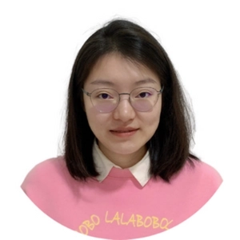

Postdoctoral Researcher | Department of Forest Sciences, University of Helsinki
Email: maoz@whu.edu.cn | Google Scholar
I am a Postdoctoral Researcher at Department of Forest Sciences, University of Helsinki, working with Prof. Jori Juhani Uusitalo. I completed my PhD in Photogrammetry and Remote Sensing at LIESMARS, Wuhan University, advised by Prof. Xianfeng Huang and Prof. Fan Zhang.
Research Interests: Photogrammetry, Computer Vision, 3D City & Landscape Modeling, Scene Understanding in UAV Images.
Ph.D. in Photogrammetry and Remote Sensing
M.Eng. in Surveying and Mapping Engineering
B.Sc. in Geographic Information System